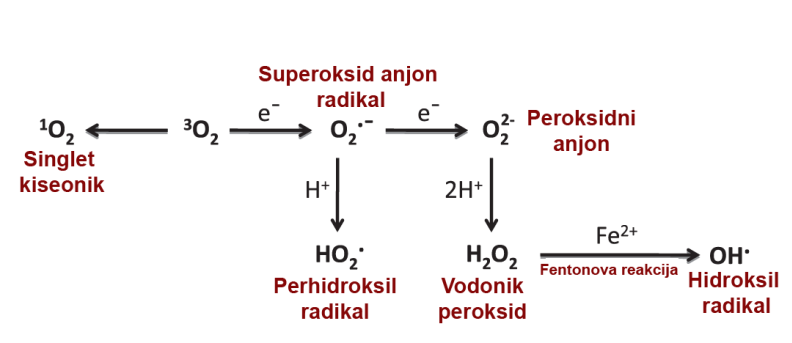
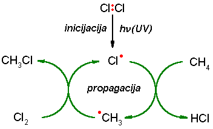
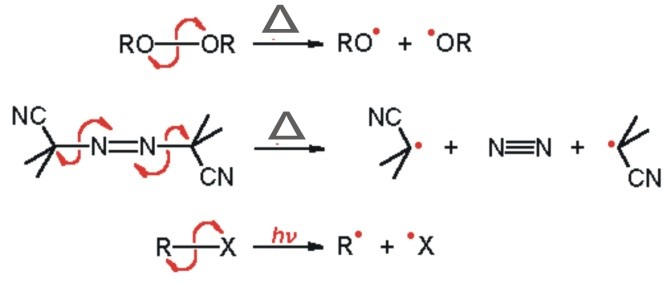
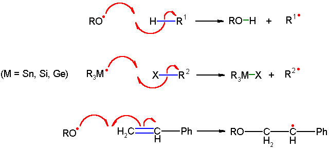
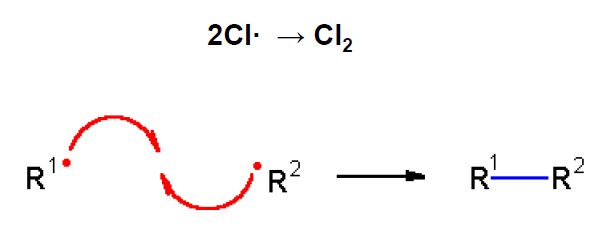
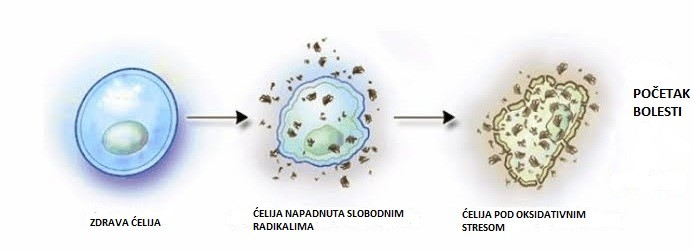

- Biološki su najznačajnije kisikove reaktivne vrste (eng. reactive oxygen species, ROS), što je zajednički naziv za radikale kisika kao i njegove reaktivne neradikalske derivate:
- -superoksidni anijon radikal (O2-•),
- -perhidroksilni radikal (HOO•),
- -hidroksilni radikal (OH•),
- -vodikov peroksid (H2O2),
- -hipohloritna kiselina (HClO)
- Uz ROS, veliku važnost imaju i reaktivne azotove vrste (eng. reactive nitrogen species, RNS):
- -azot(II)-oksid (NO)
- -azot(IV)-oksid (NO2),
- -peroksinitrit (ONOO•)
- -nitrozilni katijon (NO+)
Osim direktnog djelovanja na razne biološke vrste prisutne u organizmu neke od ROS i RNS mogu se oksidoredukcijskim reakcijama prevesti u još agresivnije oblike. Npr. O2-• može reagirati sa H2O2 i u ovoj reakciji nastaje vrlo toksičan hidroksilni radikal (Gill i Tuteja, 2010).

Izvori SR-a mogu biti endogeni i egzogeni. Endogeni SR-i u organizmu mogu nastati tokom metabolizma kisika, fagocitoze, hemotaksije, apoptoze, koagulacije, hipoksije ili hiperoksije. Egzogeni izvor SR-a mogu biti dim cigareta, lijekovi, ksenobiotici u hrani, pesticidi, radioaktivno zračenje ili UV-zračenje (Nestorović-Živković, 2013).
SR-i pokreću lančane reakcije, jer kada nekoj stabilnoj molekuli oduzmu elektron, ona postaje SR, potom taj SR napada druge molekule, da im oduzme elektron i postane stabilan (Huang i sar., 2005).
- Mehanizam reakcija slobodnih radikala sastoji se od tri osnovna koraka:
- 1. Inicijacija (pucanjem slabe kovalentne veze u molekuli nastaju dva slobodna radikala)
- 2. Propagacija (stvoreni slobodni radikal daje novi radikal i stabilni produkt)
- 3. Terminacija (“gašenje” radikala i nastajanje samo stabilnih produkata)
|  Inicijacija |
 Propagacija |
|  Terminacija |
Djelovanje slobodnih radikala na organizam
SR-i nanose štetu svim ćelijskim strukturama: ćelijskoj membrani, ćelijskim organelama, a najveća šteta nastaje kada dođe do oštećenja genetskog materijala, DNK. Promjene u genima vode ka mutacijama, a mutacije ćelija mogu dovesti do pojave malignih oboljenja (Stanković i Radovanović, 2012).
1. Arteroskleroza▼
Ateroskleroza je difuzno oboljenje arterijskih krvnih sudova koje zahvata sva vaskularna korita i karakteriše se zadebljanjem i otvrdnućem arterijskog zida. Sve veći broj činjenica ukazuje da neki patogenetski stimulusi imaju ulogu u produkciji reaktivnih oksidativnih čestica u endotelnoj mikrosredini i da oksidativni stres igra ključnu ulogu u nastanku endotelne disfunkcije koja je povezana sa aterosklerozom. Oksidativni stres se identificira preko procesa ateroskleroze, čiji je rani stadijum endotelna disfunkcija. Sa napredovanjem procesa ateroskleroze, dolazi do produkcije velike količine slobodnih radikala koji dalje podstiču aterogenezu (Gotto i sar., 2003).
2. Oštećenje krvnih sudova i srčani udar▼
Masti lahko mogu da užegnu (oksidacija masti), pa tako dolazi do ubrzanog oštećenja krvnih sudova. Ako se dio ovih masnih nakupina „otkine“, organizam reaguje kao da je došlo do povrede i počinje proces koagulacije krvi. Dolazi do akumulacije trombocita i njihovog povezivanja u vidu čepa. Kada trombociti dođu u kontakt sa oštećenim zidom krvnog suda, oni se aktiviraju. Počinju da bubre, postaju ljepljivi, dobijaju nepravilni oblik, sa brojnim nastavcima sa njihove površine. Dolazi do povezivanja trombocita između sebe i sa krvnim sudom. Pri tome dolazi do sužavanja krvnog suda. U povezivanju krvnih pločica u trombocitni čep učetvuje i fibrinogen, protein krvne plazme čijom se aktivacijom stvara krvni ugrušak. Krvni ugrušak se sastoji od fibrinske mreže i ćelija krvi (eritrociti, leukociti, trombociti), koje su uhvaćene u tu mrežu. Fibrinska vlakna se vežu za zidove krvnog suda, pa se on time začepi (Lillicrap i sar., 2009). Ekstremni slučajevi su kada do ovakvog začepljenja krvnog suda dođe u mozgu (moždani udar), ili u srcu (srčani udar ili infarkt miokarda) (Fang i sar., 2002).
3. Oštećenje DNK▼
Slobodni radikali nanose štetu DNK i dovode do mutacija gena, na taj način dolazi do stvaranja kancerogenih ćelija. Ako kancerogene ćelije počnu da se razvijaju neograničeno nastaju tumori (Nakazawa i sar., 1996). U posljednje vrijeme došlo je do epidemije malignih oboljenja, a pretpostavlja se da je to velikim dijelom zbog mnogo veće izloženosti stanovništva zagađenjima vode, zraka i hrane, te usljed loših prehrambenih i životnih navika i stresnih uslova života i rada.
| 
Djelovanje slobodnih radikala na čelije u organizmu |